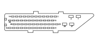

M054A ROBOTIZED TRANSMISSION CONTROL UNIT (FRONT)
- Path
- Electrical equipment > 3 CONNECTORS > M INTERMITTENT AND TIMED ELECTRONIC DEVICES > M054 ROBOTIZED TRANSMISSION CONTROL UNIT > M054A ROBOTIZED TRANSMISSION CONTROL UNIT (FRONT)
- Kind
- connector pinout (pin -> wire colour -> other end)
- Applies to
- engines: 1.2 8v; all production periods; only with equipment: Smart gearbox
- Interactive page
- https://sloeber94.github.io/elrnDB-fPnd/en/#/169003447
Applies to: engines: 1.2 8v; all production periods; only with equipment: Smart gearbox

Wiring | Colour |
|---|---|
NERO (black) |
Pin | Cable | Destination | |||
|---|---|---|---|---|---|
Sec.. | Colour | Node | Connect. | Pin | |
1 | 1,5 | N (black) | 5 | ||
2 | 1,5 | NZ (black with violet stripe) | 6 | ||
7 | 0,5 | M (brown) | 6 | ||
19 | 0,5 | V (green) | 6 | ||
26 | 0,35 | GR (yellow with red stripe) | 2 | ||
27 | 1,5 | RB (red with white stripe) | 30 | ||
28 | 0,5 | CB (orange with white stripe) | X | 6 | |
84 | |||||
9 | |||||
29 | 0,75 | BG (white with yellow stripe) | 2 | ||
31 | 0,75 | AN (light blue with black stripe) | 60 | ||
32 | 0,75 | BV (white with green stripe) | 10 | ||
33 | 0,5 | M (brown) | 7 | ||
36 | 0,35 | CN (orange with black stripe) | 17 | ||
38 | 0,5 | B (white) | 18 | ||
39 | 0,35 | HR (grey with red stripe) | 14 | ||
40 | 0,35 | MN (brown with black stripe) | 6 | ||
42 | 0,5 | ZN (violet with black stripe) | 85 | ||
43 | 0,75 | HN (grey with black stripe) | 11 | ||
44 | 0,75 | AR (light blue with red stripe) | 20 | ||
45 | 0,5 | V (green) | 7 | ||
48 | 0,35 | MV (brown with green stripe) | 63 | ||
49 | 0,5 | BR (white with red stripe) | 3 | ||
50 | 0,5 | H (grey) | 19 | ||
51 | 0,35 | SV (pink with green stripe) | 15 | ||
52 | 0,5 | AV (light blue with green stripe) | 7 | ||
Topics linked from this page (10)
- 12 FRONT
- B001D JUNCTION UNIT (FRONT)
- C011 RIGHT FRONT EARTH
- D079 TRANSMISSION SENSORS COUPLING
- D097A SHORT CIRCUITING COUPLING (FRONT)
- D097G SHORT CIRCUITING COUPLING (FRONT)
- D097H SHORT CIRCUITING COUPLING (FRONT)
- H037 GEAR CONTROLS
- M001D BODY COMPUTER (FRONT)
- M010B ENGINE MANAGEMENT ECU (FRONT)
Topics that link to this page (16)
- B001D JUNCTION UNIT (FRONT)
- B001D JUNCTION UNIT (FRONT)
- B001D JUNCTION UNIT (FRONT)
- B001D JUNCTION UNIT (FRONT)
- C011 RIGHT FRONT EARTH (FRONT)
- C011 RIGHT FRONT EARTH (FRONT)
- D079 TRANSMISSION SENSORS COUPLING (FRONT)
- D097A SHORT CIRCUITING COUPLING (FRONT)
- D097A SHORT CIRCUITING COUPLING (FRONT)
- D097G SHORT CIRCUITING COUPLING (FRONT)
- D097G SHORT CIRCUITING COUPLING (FRONT)
- D097H SHORT CIRCUITING COUPLING (FRONT)
- H037 GEAR CONTROLS (FRONT)
- M010B ENGINE MANAGEMENT ECU (FRONT)
- M010B ENGINE MANAGEMENT ECU (FRONT)
- M010B ENGINE MANAGEMENT ECU (FRONT)